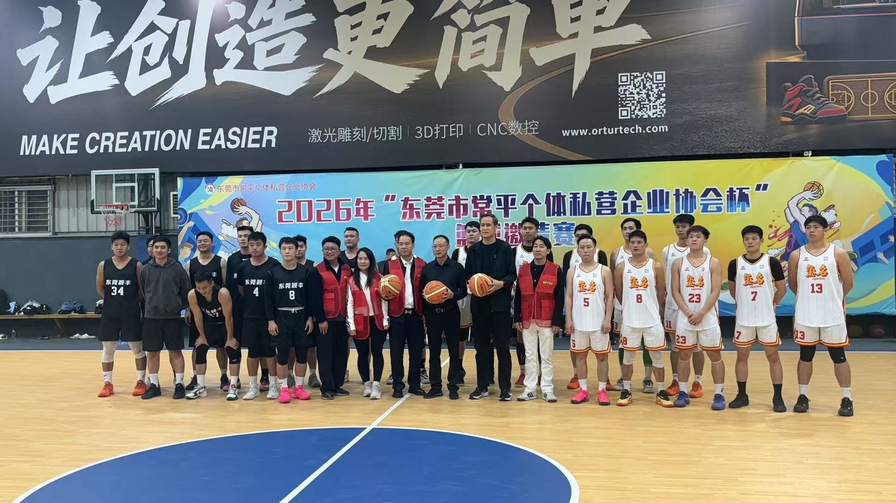
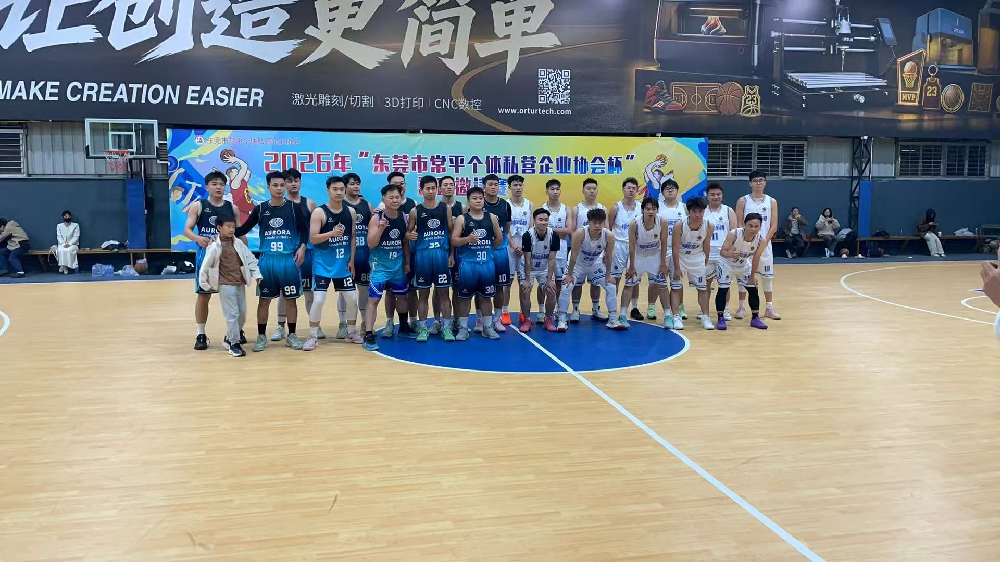
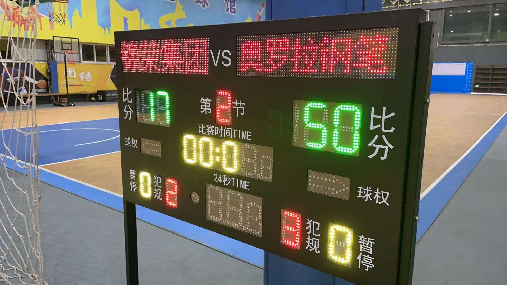
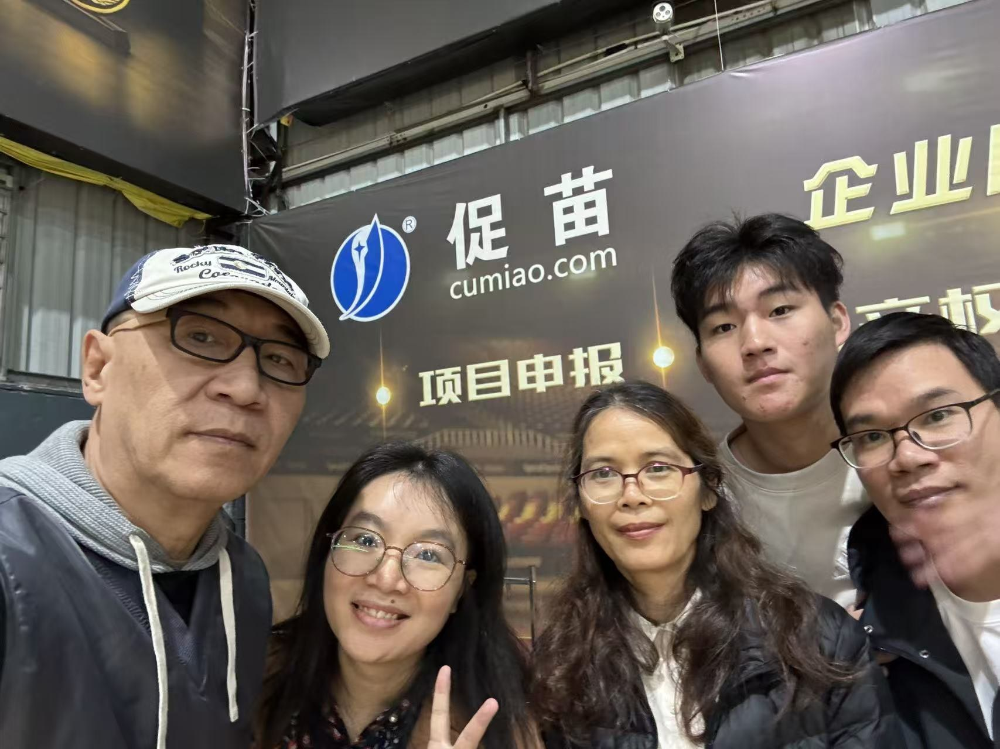

莞促集团赞助 2026 年「东莞市常平个体私营企业协会杯」篮球邀请赛

11月21日，第一届2026年「东莞市常平个体私营企业协会杯」篮球邀请赛在常平举行。本次赛事由东莞市常平个体私营企业协会主办，旨在丰富会员企业文体生活、增进企业家之间的交流联系。莞促集团有限公司作为赞助单位，对赛事给予支持。
启动仪式：副镇长赵宁发为比赛跳球
比赛启动仪式上，常平镇副镇长赵宁发为比赛跳球，拉开首届「协会杯」篮球邀请赛的序幕。东莞市市场监督管理局常平分局副局长杜遵凯，东莞市常平个体私营企业协会会长、莞促集团董事长谭喜，协会党支部书记李达豪、秘书长彭东正、副会长李海南出席活动；莞促集团员工代表、集团党支部委员孙晓君到场观赛助阵。
赛场内外：以球会友，凝聚企业力量

本次邀请赛吸引了多支队伍参赛，球员们在球场上展开激烈角逐，场下则交流经营心得、互通资源信息。赛事组委会表示，篮球赛把企业家和员工从办公桌前带到运动场，既锻炼身体，也为会员单位创造了轻松自然的交流场景。

董事长谭喜：赞助是搭台，让企业之间多一层连接
对于此次赞助，莞促集团董事长、东莞市常平个体私营企业协会会长谭喜表示，协会组织篮球赛，本质上是为企业家搭一个「非商务」的交流平台——在赛场上配合、在场下聊天，很多合作的机会就是这样自然产生的。莞促集团长期扎根常平、服务东莞企业，希望通过支持这样的活动，让企业之间多一层连接，也让「团结、拼搏」的体育精神延伸到企业经营中去。
企业的成长离不开交流与合作。我们赞助赛事，不只是出一分力，更是希望和各位会员企业一起，把健康、积极、长期的精神带到经营里。

持续参与本地产业生态建设
莞促集团长期关注并参与东莞本地的商协会活动与企业交流。集团主营业务覆盖企业服务、财税工商、知识产权、数字科技、产业投资与教育文旅六大板块，旗下多家成员企业与常平镇的企业保持着日常服务联系。此次支持「协会杯」篮球邀请赛，是集团参与本地产业生态建设、履行企业社会责任的又一次实践。
未来，莞促集团将继续支持常平个体私营企业协会的各类活动，与会员企业一道，推动资源共享、优势互补，共同服务常平乃至东莞的企业发展。